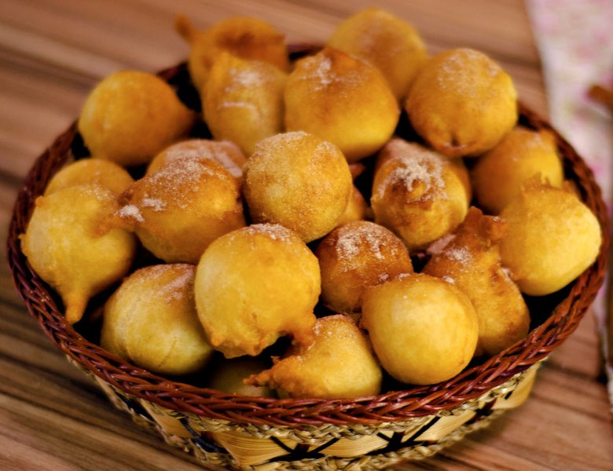

Doce de Abóbora da Vó
Ingredientes
- 1 kg de abóbora madura
- 500g de açúcar
- 2 pau de canela
- 6 cravos-da-índia
- 1 xícara de água
- Coco ralado a gosto (opcional)
Modo de Preparo
- Descasque e corte a abóbora em cubos pequenos.
- Em uma panela grande, coloque a abóbora, o açúcar, a canela e os cravos.
- Adicione a água e leve ao fogo médio.
- Cozinhe mexendo de vez em quando até a abóbora ficar bem macia.
- Amasse a abóbora com uma colher até formar um doce cremoso.
- Continue cozinhando até atingir o ponto desejado.
- Se quiser, adicione coco ralado no final.
- Deixe esfriar e guarde em potes de vidro esterilizados.
Dicas da Vó
Escolha uma abóbora bem madura e laranja para um doce mais saboroso.
O ponto ideal é quando a colher passar no fundo da panela e o doce não juntar novamente.
Para conservar por mais tempo, esterilize bem os potes antes de guardar o doce.